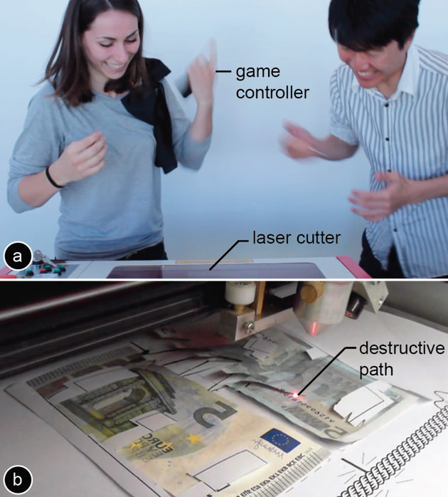
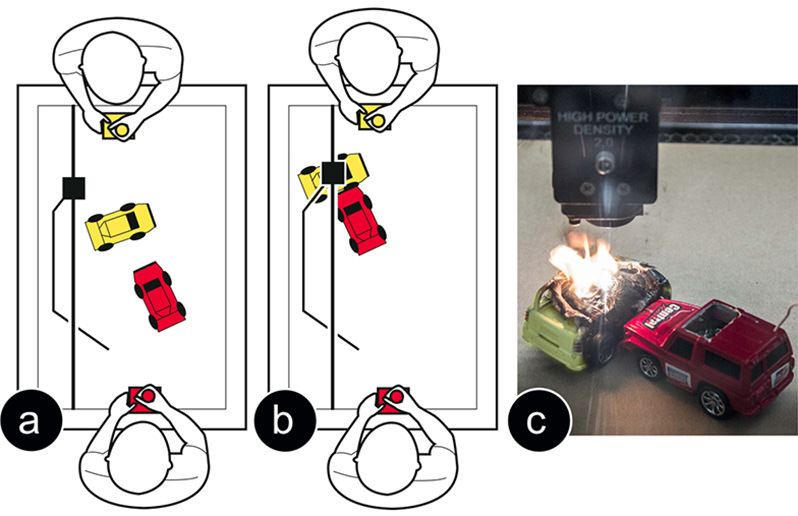
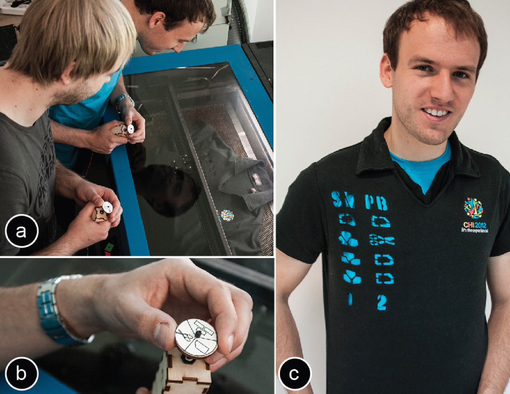
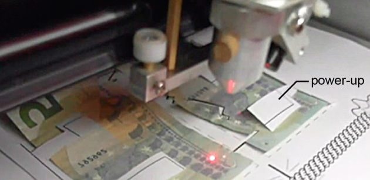
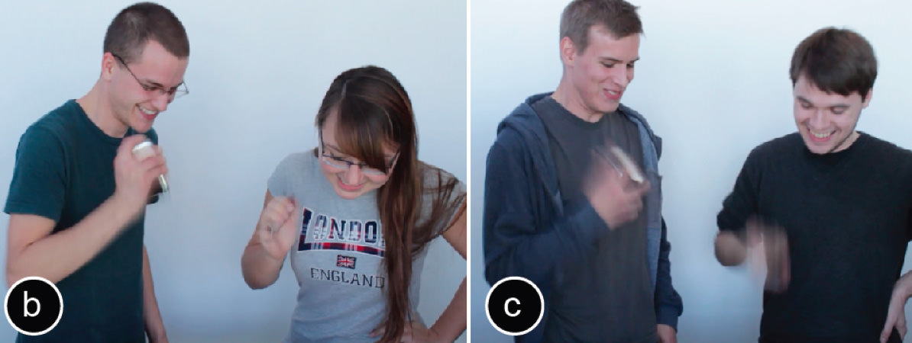
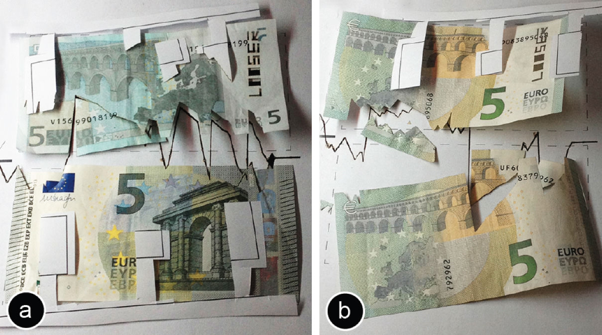

1 / 46

2 / 46

3 / 46

4 / 46

5 / 46

6 / 46

7 / 46

8 / 46

9 / 46

10 / 46

11 / 46

12 / 46

13 / 46

14 / 46

15 / 46

16 / 46

17 / 46

18 / 46

19 / 46

20 / 46

21 / 46

22 / 46

23 / 46

24 / 46

25 / 46

26 / 46

27 / 46

28 / 46

29 / 46

30 / 46

31 / 46

32 / 46

33 / 46

34 / 46

35 / 46

36 / 46

37 / 46

38 / 46

39 / 46

40 / 46

41 / 46

42 / 46

43 / 46

44 / 46

45 / 46

46 / 46

×
❮
❯
Destructive Games:
Creating Value by Destroying Valuable Physical Objects.

Figure 1: Destructive games are games that result in valuable physical objects being damaged or destroyed. To play destructive Tug-of-War, each player places a money bill into the laser cutter, and then tries to direct the laser into the other player’s bill. Surprisingly, we found that 8 out of 12 players would play again.
While personal fabrication tools, such as laser cutters and milling machines, are intended for construction, we are exploring their use for destruction. We present a series of games that result in valuable physical objects being destroyed—objects owned by the players. Interestingly, we found that we can design these games to be desirable to play, despite the loss of the object, by instead producing social value. As part of a user study, twelve students played a destructive game in which a laser cutter cut up their own money bills. Surprisingly, 8 out of 12 participants would play again. They shared their post-game stories with us.
Introduction
While the primary objective of engineers is to create, artists and researchers have occasionally reversed this main underlying principle and explored destruction. This approach of reversing a central question has a long tradition as it can help understand the original question.
In the virtual world, game designers have explored destruction as a tool for increasing excitement by adding irreversible consequences to otherwise generic and replicable experiences [7]. In the physical world, artists and researchers picked up on the topic, creating artifacts that either allow users to destroy physical objects [14], or that self-destroy themselves after a limited period of time [9] or usage [12]. Similarly, producers have staged destruction in front of a TV audience, harnessing the resulting fascination [20].
In this note, we are raising the question if destruction can be given purpose in the context of a recent technical evolution: Personal fabrication tools have the ability to create and destroy under computer control. This allows us to explore destruction from a new perspective, namely in cular, we explore how to implement destruction-based game mechanics based on subtractive fabrication tools, in our case laser cutters.
Related Work
This note builds onto work in media, arts, and video games.
Physical destruction in the arts
The concept of destruction in art has mainly been used to raise attention for transientness. For instance, in auto-destructive art [9] the art piece destroys itself over a period of time. Artists saw the destruction of the old form as necessary to create the new form. Similarly, the DRM chair [1] is a chair that destructs itself once it has been sat on eight times. In Helena [5] blenders serve as aquariums, which can be switched on at a player’s will. In Desu100 [14] visitors can push a button causing a robot to hit itself with a hammer. While in many of these projects the destruction is voluntary (e.g. the users could choose to not interact at all), ephemeral user interfaces [4] have the in-built characteristic that they get destroyed eventually.
Digital video games with irreversible consequences
While traditional video games can be restarted, artists have proposed games with irreversible consequences: The video game One Single Life [10] destroys itself when the player’s character dies, i.e., players lose the game license. In Lose/lose [7] each alien is linked to a file on the player’s computer; when the player shoots the alien, the file is deleted. In Social Roulette [16] players spin a virtual revolver that when fired deletes the user’s facebook account. The Pain Station [13], in contrast has physical consequences in that the players’ hands get electro shocked or whipped.
Destruction with an audience
Several media channels have experimented with the concept of destruction in front of an audience. In The Big Deal [19] participants destroy their objects, e.g. by throwing their electronic devices off a crane onto a tic-tac-toe field—potentially winning new devices at the end. Participants of the TV show Trashed [20] bring a valuable personal object, such as their wedding dress, to the show. If the participant loses, the object is destroyed; otherwise the participant wins 25.000 dollars. The show attracts an audience, because of the fascination resulting from watching the taboo of intentional destruction being broken. The actual players, in contrast, play because of the monetary incentive, which is financed by the audience through advertising. The monetary incentive is necessary, because the players do not just witness destruction, but experience actual materialistic loss.
In this note, we build on these concepts, in particular on irreversible consequences and destruction in front of an audience. By combining these general schemas with personal fabrication tools, we create a destruction-based game mechanisms that works on a personal scale.
Destructive games: The Design Challenge
We define a destructive game as a game that results in an object that is owned by a player being destroyed.
The main design challenge is to create a game that is worth playing. As for any non-destructive game this means to produce a positive net balance: the value of engaging in the game has to be larger than not to engage in it [18].
For traditional games, this bar is comparably low: as long as the game produces some value, typically fun, it produces enough value to justify the expense in time. Unlike traditional games, however, physically destructive games contain events of material loss in the equation. These increase the risk of running into a negative net value. Right before encountering such a point, players would logically stop to play—meaning that the game has failed.
Consequently, a physically destructive game has to produce enough value to outweigh the loss from the destruction.
In the remainder of this note, we detail a series of games that we implemented to better understand what game-mechanics are required to design a destructive game worth playing. The insights we gained from designing the first two games laid down the foundation for the third final game design.
Design 1: Irreversible consequences
Our first approach was based on the concept of “video games with irreversible consequences” discussed earlier. Implicitly, our working hypothesis was that the fascination of destruction itself might be sufficient to justify playing.
In our two example games, players drive their own remote controlled cars inside the laser cutter. Their objective is to destroy the other player’s car with the help of the laser.
In the first game, CarSumo (Figure 2), the actively running laser is traversing the playfield and players use their car to push the other player’s car into the path of the laser. In LaserNinja picking up the power-up activates the laser and gives the player control over it.
Insights: During informal user testing, players reported that the destruction indeed added thrill to the game. However, they felt that the additional excitement during the game did not outweigh the loss of the car. As a result, the games did not “work” since they did not produce sufficient value so as to exceed the value of the damaged objects.

Figure 2: CarSumo: red is trying to push yellow’s car into the laser.
Design 2: Destruction in front of a (delayed) audience
We built our next round of designs on the concept of “destruction in front of an audience” also discussed earlier.
The main challenge was how to create the audience. TV shows are designed around an audience; games, however, are a rather personal endeavor. Our idea to solve this issue was to create an audience after the game.
We achieved this using a two-phase design in which the game takes place first, and then the audience follows later. To make the link, we introduced what we call a messenger object, i.e., an artifact that players own and that conserves the experience for sharing it with the future audience. The new challenge thus was to design the messenger object, i.e., to integrate it with the game in a meaningful way.
In order to explore the concept of the messenger object, we implemented a game we call Destructive Rock-Paper-Scissors (Figure 3). The game is played like the traditional game of the same name—except that the outcome of each round is cut into a messenger object: the players’ shirts. At the beginning of the game, players place their shirts on top of each other inside the laser cutter. To enter the rock, paper, scissor gestures, players use a simple game controller. At the end of all rounds, the game cuts one last row into the shirt that states who won and who lost.

Figure 3: In Destructive Rock-Paper-Scissors every round is logged into players’ shirts.
Insights: The game worked in that the cut-up shirt served as a messenger object that players could wear afterwards, creating an audience. When wearing the shirt players reported that people asked them about their unusual wear—thus creating social interaction between the player and the audience (see Sacks et al.’s “Ticket to talk” [14]). At the same time, however, the shirt failed in its role as a messenger object in the quality of interaction. Wearing the damaged shirt was clearly the wearer’s choice to get attention from peers: The game results showing the player’s performance were unambiguous and publicly visible at all times. The shirt therefore tended to be understood as the wearer’s desire to show off, giving the social interaction a negative connotation.
Design 3: The humble messenger
Studies in psychology indicate that communication partners are more open to listening to a story and are less likely to perceive it as boasting if the communication partner asks for the story [17]. Based on this, we redesigned the messenger object so as to appear less like the player’s choice and more “accidental”, which we hoped would cause potential conversation partners to ask.
Figure 1 shows the resulting game design called Destructive Tug-of-War; it uses a money bill as the messenger object. The game begins when both players place their money bills side-by-side inside the laser cutter. The laser is positioned at one end between the two money bills and both players are given a simple game controller that contains an accelerometer (iPod Touch).
The game is played in a continuous 1 minute round. During that time, the laser traverses the middle axis between the two bills. Both players shake their controllers as hard as they can in order to direct the laser towards the opposing player’s money bill. The laser is always on: Whenever the laser moves side-ways into one of the player’s money bills, it cuts into it in real-time. When the laser reaches the top end of the bills, the game ends. The game determines the loser and cuts the word “loser” into that player’s bill. Then both players get (whatever is left of) their own money bill back. To keep the game exciting for unmatched pairs of players, a power-up mechanism allows for a late victory: when the laser hits the little paper squares previously placed on the bills, it bounces all the way over to the opponent’s side cutting into the opponent’s bill (Figure 4).

Figure 4: Destructive Tug-of-War power-up mechanism bounces the laser all the way to the opponent’s side.
Tug-of-War meets its audience when the players spend their money bills as the bill produces a conversation about the nature of its damage and the history behind it. (To enable this we designed the game to not cut into the bill’s serial number; in the Euro zone this means they remain a valid payment [3]). Note that we designed the game to assure that both money bills will carry substantial damage, so both players end up with an interesting artifact.
Insights: The messenger object in Tug-of-War worked well: Unlike a damaged shirt, player’s carry the money privately allowing the bill to be used in a more targeted fashion, showing it a broad audience in a pub, or just the single person one is shopping with. At the same time, damaging money is a taboo and generated particular interest. The damaged bill is also both ambiguous and concrete, in that the destructive traces in the messenger object neither appear accidental nor caused by an obvious explanation. Once the story with the laser is established, however, each stroke on the bill has meaning in that it provides testimony of one moment of the game.
Qualitative Exploratory User study
We conducted a small-scale qualitative user study to explore whether and in how far destructive Tug-of-War succeeds at producing social value and is thus worth playing. We recruited 12 students (3 females) from a seminar at our institution, aged 22 to 32. In teams of two, participants played Tug-of-War with their own 5 Euro bills (Figure 5). We did not inform them about what is happening during the game. Participants did not get paid.
Participants rated the game as exciting (5.5 on a 7-point Likert scale, 1=boring, 7=exciting). 8 out of the 12 participants (3 losers) planned to show the bill to their friends. A few days later, we asked all participants about their stories. Two posted a picture of the bill on Facebook, resulting in many questions and likes from their peers. Four had spent the bill at a club or super market. Five participants felt the bill was a memento—and decided to keep it for them.
One of the participants, who lost the game and was initially very frustrated, wrote: “… but I got a bunch of laughs in a store when I accidentally pulled the bill out. Later that day it was also a great conversation starter at a club.”

Figure 5: Participants playing destructive Tug-of-War.
Figure 6 shows the money bills from two of the games with their traces of damage, but not all of them got cut up. In contrast to what one would expect, two of the winning participants whose bills were not damaged at all stated they would have preferred a damaged bill and that they regret not having a proof of their gaming experience that they could share with others.

Figure 6: Some participants’ money bills after the game
Discussion
While designing and testing our games we gained the following insights:
Type of objects: Objects that are valuable because of their material value rather than their personal value work best. The money bill works great, so does an everyday t-shirt the player owns. However, the gained social value would not outweigh the loss when, e.g. using the player’s diary as a stake (see personal attachment framework [22]).
Destruction vs. damaging: Our first round of games completely destroyed the object (i.e. the cars in CarSumo and LaserNinja). However, when we redesigned the game concept and introduced the notion of the messenger object, we understood that the object still needs to be usable in a social context to generate interesting questions from the audience. We thus designed all following games (Destructive Rock-Paper-Scissor, Tug-of-War) to damage rather than destroy: objects in these games are radically modified to differentiate them from their undamaged counterparts, but are still functional, i.e. they can be worn as in the case of the t-shirt or used as a means to pay as in the case of the money bill.
Legal/ethical issues: While destructive games work with any semi-public object, the specific choice of using a money bill raises additional questions around legal/ethical issues. Burning money is forbidden in many economies and seen as an act of protest (e.g. see the art project Legal Tender [8], which allows users to remotely burn money via the internet). In addition, using money for play is often associated with unfair game play (e.g. see the discussion around Monetary Dark Patterns in games by Zagal et al. [21]). However, destructive games go beyond the example of using money, other semi-public objects also work as messenger objects.
Other application areas: Since destructed artifacts cause a special fascination, they can cause viral effects when evidence of the destruction is shared online. We believe this is an interesting direction to explore from a commercial side.
Implementation
We implemented our games on two laser cutters: (1) A commercial laser cutter (model: ULS PLS6.150D), which receives line drawings via the print queue and is subject to ~4s delay (building onto constructable [10]). We made the laser move along pre-computed paths, which we canceled when a new event happened, which worked for games like CarSumo. (2) An open source laser cutter (model: HPC LS3020 with the LaOS open source main board), which firmware we modified with a TCP server that executes commands instantly. This allowed us to achieve the real-time control for Tug-of-War.
Conclusion
We presented destructive games, a series of games that damage objects owned by the players as the result of playing. The main take away from our research is that through the careful design of game mechanics, destruction can create value: It converts material value into social value by generating a conversational artifact that helps the owner to engage with an audience. Destruction is thus not inherently negative, but the generated social value is what gives the destruction a purpose. We believe that this counter-intuitive insight would not have been possible without reversing the intuitive statement “creation creates value” to the counter-intuitive statement “destruction creates value”.
 Video
Slides
Video
Slides